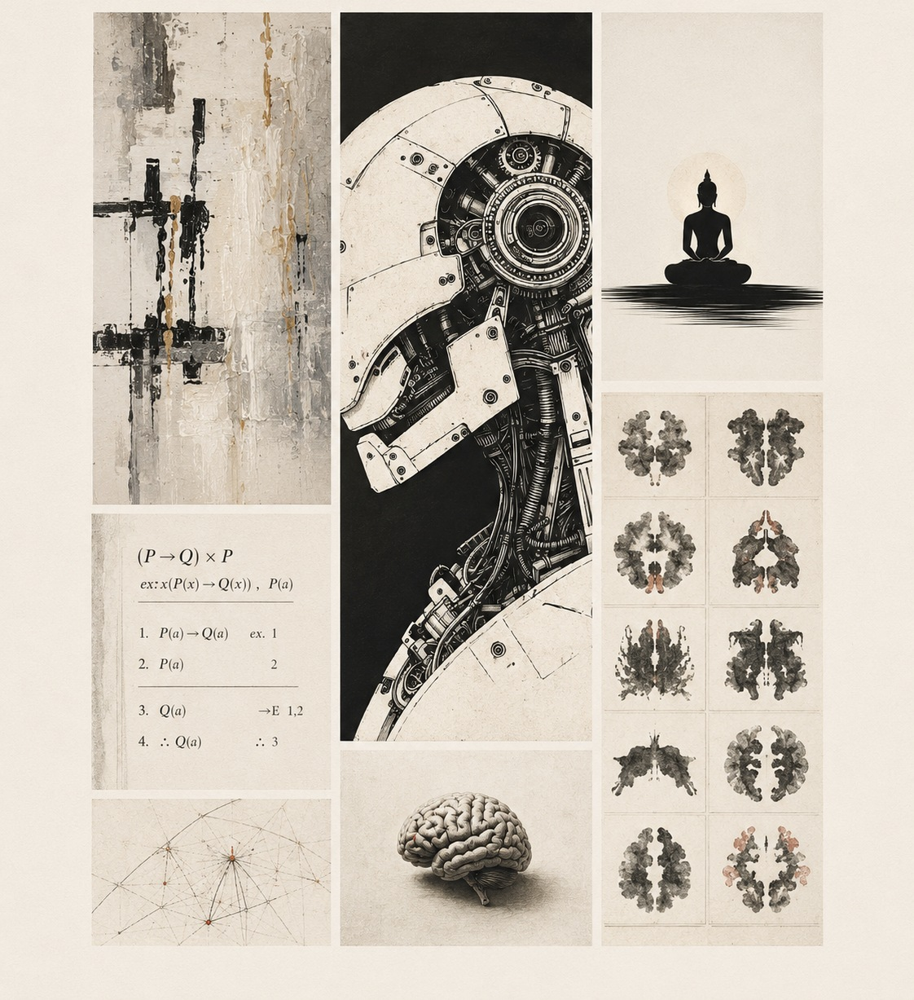

01.1
Consciousness and Attention
I examine the relationship between attention and conscious experience, including introspective access, perceptual overflow, and the temporal structure of awareness.
Philosophy of Mind · Cognitive Science · Artificial Intelligence
Assistant Professor of Philosophy · University of Wisconsin–Madison

I work primarily in philosophy of mind, philosophy of cognitive science, and epistemology.
My research concerns consciousness and attention, the formats of mental representation, cognitive maps, and the foundations of intelligence.
01
01.1
I examine the relationship between attention and conscious experience, including introspective access, perceptual overflow, and the temporal structure of awareness.
01.2
I study the formats of mental representation, with particular interest in spatial representation, cognitive maps, and the explanatory role of map-like neural codes.
01.3
My newer work investigates the foundations of a theory of intelligence and the conceptual relations among natural cognition, psychometrics, biological systems, and AI.
02
2026
Erkenntnis.
2024
Synthese.
03
Fall 2026
An advanced introduction to consciousness, mental representation, externalism, artificial intelligence, and personal identity.
Fall 2026
An introduction to the philosophical and social problems raised by AI, including fairness, privacy, explainability, alignment, and moral status.
04
I am an Assistant Professor of Philosophy at the University of Wisconsin–Madison. My work lies primarily in philosophy of mind, epistemology, and cognitive science.